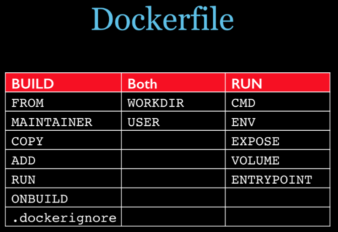

Docker¶
安装¶
-
使用get docker安装（比较简单）
sudo apt install curl curl -fsSL https://get.docker.com -o get-docker.sh sudo sh get-docker.sh -
使用官网教程安装（推荐，可以了解细节）
# Add Docker's official GPG key: sudo apt-get update sudo apt-get install ca-certificates curl sudo install -m 0755 -d /etc/apt/keyrings sudo curl -fsSL https://download.docker.com/linux/ubuntu/gpg -o /etc/apt/keyrings/docker.asc sudo chmod a+r /etc/apt/keyrings/docker.asc # Add the repository to Apt sources: echo \ "deb [arch=$(dpkg --print-architecture) signed-by=/etc/apt/keyrings/docker.asc] https://download.docker.com/linux/ubuntu \ $(. /etc/os-release && echo "$VERSION_CODENAME") stable" | \ sudo tee /etc/apt/sources.list.d/docker.list > /dev/null sudo apt-get update sudo apt-get install docker-ce docker-ce-cli containerd.io docker-buildx-plugin docker compose-plugin - 镜像安装
由于国内网络的问题，可能导致安装失败，推荐使用阿里云镜像安装
# step 1: 安装必要的一些系统工具 sudo apt-get update sudo apt-get -y install apt-transport-https ca-certificates curl software-properties-common # step 2: 安装GPG证书 curl -fsSL https://mirrors.aliyun.com/docker-ce/linux/ubuntu/gpg | sudo apt-key add - # Step 3: 写入软件源信息 sudo add-apt-repository "deb [arch=$(dpkg --print-architecture)] https://mirrors.aliyun.com/docker-ce/linux/ubuntu $(lsb_release -cs) stable" # Step 4: 更新并安装Docker-CE sudo apt-get -y update sudo apt-get -y install docker-ce # 安装指定版本的Docker-CE: # Step 1: 查找Docker-CE的版本: # apt-cache madison docker-ce # docker-ce | 17.03.1~ce-0~ubuntu-xenial | https://mirrors.aliyun.com/docker-ce/linux/ubuntu xenial/stable amd64 Packages # docker-ce | 17.03.0~ce-0~ubuntu-xenial | https://mirrors.aliyun.com/docker-ce/linux/ubuntu xenial/stable amd64 Packages # Step 2: 安装指定版本的Docker-CE: (VERSION例如上面的17.03.1~ce-0~ubuntu-xenial) # sudo apt-get -y install docker-ce=[VERSION]
验证是否安装完成：
docker -v
查看已有镜像¶
docker images
其他镜像操作¶
搜索镜像：
docker search <镜像名称>
删除镜像（删除镜像需要保证没有对应的容器）：
docker rmi <镜像名称:标签>
基于镜像启动容器¶
docker run -d [-p <主机端口>:<容器端口>] [--name=<容器名称>] [-v <宿主机路径>:<容器路径>] [--restart=<重启值>] <镜像名称>
-d表示在后台运行-p表示将主机的端口映射到容器的端口，注意主机的端口不能被占用，可以通过sudo lsof -i:<端口号>查看端口是否被占用，注意关闭防火墙或者防火墙开放对应的端口，否则其他机器无法访问--name指定创建的容器名称，如果不指定会自动创建-
-v（Volume 数据卷）用于将宿主机的文件夹/文件映射到容器，相当于共享文件夹，常用于映射配置文件、日志目录、数据库等 -
--restart表示容器何时重启，常见的值有： no：不重启on-failure：容器异常停止时会重启unless-stopped：除非手动停止，否则一直重启always：无论何时服务停止，都自动重启，即使手动停止
容器其他操作¶
查看正在运行的容器：
docker ps
查看所有容器：
docker ps -a
运行/停止容器：
docker start <容器名或容器ID>
docker stop <容器名或容器ID>
删除容器（删除容器前需要先停止）：
docker rm <容器名或容器ID>
查看容器日志：
docker logs <容器名或容器ID>
以交互模式运行容器：
docker run -it <容器名称> [bash]
在正在运行的容器中执行命令：
docker exec -it <容器名称或容器ID> <命令>
docker exec -it <容器名称或容器ID> /bin/bash # 在docker容器打开命令行
导出¶
docker save -o <导出文件名.tar> <镜像名称>
默认会导出到当前文件夹
导入¶
docker load -i <文件名.tar>
Dockerfile¶
是一个文件，无后缀名，使用一些保留字来构建一个Docker镜像
常见的保留字¶
- FROM : 基础镜像，当前新镜像是基于哪个镜像的，指定一个已经存在的镜像作为模板，第一条必须是from
- MAINTAINER : 镜像维护者的姓名和邮箱地址
-
RUN: 容器构建时需要运行的指令，docker build时运行有两种格式
shell格式：RUN yum -y install vim exec格式：RUN ["可执行文件","参数1","参数2"] -
EXPOSE : 当前容器对外暴露出的端口
- WORKDIR ：指定在创建容器后，终端默认登陆的进来工作目录，一个落脚点
- USER ：指定该镜像以什么样的用户去执行，如果都不指定，默认是root
- ENV ：用来在构建镜像过程中设置环境变量
ENV MY_PATH /usr/mypath - ADD : 将宿主机目录下的文件拷贝进镜像且会自动处理URL和解压tar压缩包
- COPY : 类似ADD，拷贝文件和目录到镜像中。 将从构建上下文目录中 <源路径> 的文件/目录复制到新的一层的镜像内的 <目标路径> 位置
- VOLUME : 容器数据卷，用于数据保存和持久化工作
- CMD : 指定容器启动后的要干的事情，与RUN命令格式类似
- ENTRYPOINT ：也是用来指定一个容器启动时要运行的命令，类似于 CMD 指令，但是ENTRYPOINT不会被docker run后面的命令覆盖， 而且这些命令行参数会被当作参数送给 ENTRYPOINT 指令指定的程序

# 自定义一个java8的镜像
FROM centos
MAINTAINER zzyy<zzyybs@126.com>
ENV MYPATH /usr/local
WORKDIR $MYPATH
#安装vim编辑器
RUN yum -y install vim
#安装ifconfig命令查看网络IP
RUN yum -y install net-tools
#安装java8及lib库
RUN yum -y install glibc.i686
RUN mkdir /usr/local/java
#ADD 是相对路径jar,把jdk-8u171-linux-x64.tar.gz添加到容器中,安装包必须要和Dockerfile文件在同一位置
ADD jdk-8u171-linux-x64.tar.gz /usr/local/java/
#配置java环境变量
ENV JAVA_HOME /usr/local/java/jdk1.8.0_171
ENV JRE_HOME $JAVA_HOME/jre
ENV CLASSPATH $JAVA_HOME/lib/dt.jar:$JAVA_HOME/lib/tools.jar:$JRE_HOME/lib:$CLASSPATH
ENV PATH $JAVA_HOME/bin:$PATH
EXPOSE 80
CMD echo $MYPATH
CMD echo "success--------------ok"
CMD /bin/bash
构建镜像¶
进入到项目目录，运行以下命令构建 Docker 镜像，命令最后有一个点“.”
docker build -t <镜像名称>:TAG .
其中 . 表示使用当前目录下的 Dockerfile 文件进行构建。
Docker Compose¶
Docker Compose 用于定义和管理多个 docker 容器
安装 Docker Compose，目前安装Docker的使用都已经安装了Docker Compose，而且命令由原来的docker compose变为现在的docker compose，如果是较老版本的Docker可以参考一下命令安装
# 可能需要梯子或者多尝试几次
sudo curl -L "https://github.com/docker/compose/releases/download/1.29.2/docker compose-$(uname -s)-$(uname -m)" -o /usr/local/bin/docker compose
sudo chmod +x /usr/local/bin/docker compose
验证安装是否完成（可能需要重启）：
docker compose -version
Docker Compose常用命令¶
docker compose -h # 查看帮助
docker compose up # 启动所有docker compose服务
docker compose up -d # 启动所有docker compose服务并后台运行
docker compose down # 停止并删除容器、网络、卷、镜像。
docker compose exec yml里面的服务id # 进入容器实例内部 docker compose exec docker compose.yml文件中写的服务id /bin/bash
docker compose ps # 展示当前docker compose编排过的运行的所有容器
docker compose top # 展示当前docker compose编排过的容器进程
docker compose logs yml里面的服务id # 查看容器输出日志
docker compose config # 检查配置
docker compose config -q # 检查配置，有问题才有输出
docker compose restart # 重启服务
docker compose start # 启动服务
docker compose stop # 停止服务
编写 docker compose.yml 配置文件：
version: '3'
services:
nginx-service:
build:
context: ./nginx-service
image: nginx-service:latest
container_name: nginx-service
ports:
- '80:80'
# network_mode: host
restart: unless-stopped
volumes:
- ./nginx-service/log:/var/log/nginx
node-service:
build:
context: ./node-service
image: node-service:latest
container_name: node-service
ports:
- '3000:3000'
# network_mode: host
restart: unless-stopped
容器间通信：
- docker 容器的
network_mode默认为bridge，即容器桥接到宿主机，不同容器间通过 IP 或者服务名称进行通信，例如：nginx 服务可以通过将接口反向代理到http://node-service来访问对应的接口 - 如果不同容器间想要通过
localhost进行访问，需要将network_mode设为host模式，将各个容器直接绑定到宿主机网络上，注意这种模式下容器使用宿主机的端口，所以不能手动映射端口
常用命令：
-
docker compose build：读取当前目录下的docker compose.yml，如果某个服务指定了build属性，则会基于对应路径下的Dockerfile进行构建 -
docker compose up -d：读取当前目录中的docker compose.yml配置，构建对应镜像和启动容器，-d参数表示在后台运行 docker compose ps：查看 docker compose 创建的服务docker compose stop：停止已创建服务的容器，不会删除这些容器docker compose start：启动已创建服务的容器，不会重新构建docker compose down：停止并删除所有容器docker compose restart：重启已创建服务的容器
常见应用部署¶
Node¶
FROM ubuntu:20.04
RUN apt update && \
apt install -y curl && \
curl -fsSL https://deb.nodesource.com/setup_18.x | bash - && \
apt install -y nodejs
如果直接拉取 node 镜像，会包含更多的软件包和依赖项，因此基于 ubuntu 镜像安装 node 这种方式反而更加节省空间
Gitlab¶
version: '3'
services:
gitlab:
image: gitlab/gitlab-ce:latest
container_name: gitlab
ports:
- '80:80'
- '443:443'
# ssh端口映射为2222
- '2222:22'
restart: unless-stopped
# 主机名称，换成实际宿主机ip
hostname: 192.168.1.9
environment:
# 这里也要改ssh端口
GITLAB_OMNIBUS_CONFIG: |
gitlab_rails['gitlab_shell_ssh_port'] = 2222
查看 root 初始密码：
sudo docker exec -it gitlab grep 'Password:' /etc/gitlab/initial_root_password
添加 SSH 秘钥，创建仓库后如何添加 remote：
git remote add origin ssh://git@<宿主机ip>:2222/<用户名>/仓库名.git
MySQL¶
mysql:
image: mysql:5.7
container_name: mysql
ports:
- '3306:3306'
restart: unless-stopped
environment:
- MYSQL_ROOT_PASSWORD=admin123
volumes:
# mysql配置文件
- ./mysql/my.cnf:/etc/mysql/my.cnf
# 数据库数据
- ./mysql/data:/var/lib/mysql
# mysql日志
- ./mysql/logs:/var/log/mysql
MongoDB¶
# docker compose.yml
version: '3'
services:
mongo:
image: mongo:4.4.0
container_name: mongo
ports:
- '27017:27017'
environment:
# 账号密码
MONGO_INITDB_ROOT_USERNAME: mongodb
MONGO_INITDB_ROOT_PASSWORD: mongodb
volumes:
# 数据库数据
- ./mongodb/data:/data/db
# 数据库日志
- ./mongodb/log:/var/log/mongodb
# 初始化脚本
- ./mongodb/init.js:/docker-entrypoint-initdb.d/init.js
// mongodb/init.js
// 创建数据库
db = db.getSiblingDB('mydb');
// 创建用户
db.createUser({
user: 'mongodb',
pwd: 'mongodb',
roles: [
{
role: 'readWrite',
db: 'mydb',
},
],
});
// 创建集合
db.createCollection('mycollection');
Java¶
# 基础镜像
FROM openjdk:8
# 设置工作目录
WORKDIR /home/java
# 拷贝jar包到容器中
COPY ./service.jar ./
# 暴露端口
EXPOSE 8080
# 启动
RUN java -jar service.jar
阿里云容器镜像服务¶
-
创建实例：阿里云官网并登录账号，搜索容器镜像服务，创建个人实例
-
设置 Resgitry 密码
-
创建命名空间
-
创建仓库
-
镜像推送
# 登录
docker login --username=<阿里云登录名> registry.cn-shenzhen.aliyuncs.com
# 为本地镜像创建标签
docker tag <本地镜像> registry.cn-shenzhen.aliyuncs.com/<命名空间>/<仓库名称>:<镜像标签>
# 推送
docker push registry.cn-shenzhen.aliyuncs.com/<命名空间>/<仓库名称>:<镜像标签>
- 拉取镜像
docker push registry.cn-shenzhen.aliyuncs.com/<命名空间>/<仓库名称>:<镜像标签>
Portainer 可视化管理¶
拉取社区版镜像：
sudo docker pull portainer/protainer-ce
启动容器：
sudo docker run -d -p 9000:9000 --name=portainer --restart=always -v /var/run/docker.sock:/var/run/docker.sock -v portainer_data:/data portainer/portainer-ce:latest
浏览器访问：
http://localhost:9000
输入密码，创建 admin 账号并登录，选择快速开始，选择 local 这个环境